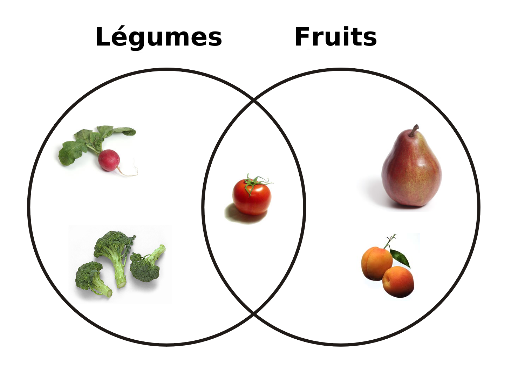

Fruit ou Légume ?
« Fruit » et « légume » ont une double acception selon que l'on se place dans le cadre de la cuisine ou de la botanique.
En botanique, « légume » désigne le fruit des légumineuses ou Fabaceae, que l'on nomme également « gousse ».
Au plan botanique, un fruit, de type charnu ou non, est la structure issue de l'évolution arrivée à maturité de l'ovaire, dont le rôle est deprotéger et d'assurer la diffusion des graines. De nombreux fruits botaniques ne sont pas comestibles et peuvent même être toxiques.
Au sens culinaire, le terme « fruit » désigne des fruits charnus, mais parfois aussi d'autres parties de plantes, qui sont à la fois comestibles, de goût agréable, que l'on peut généralement consommer crus et qui conviennent à la préparation de plats sucrés et dedesserts, par exemple les fraises, pêches, prunes, etc.
À contrario, nombre de fruits botaniques comestibles, tels que la tomate, l'aubergine ou le poivron, se préparent sans sucre et entrent habituellement dans la confection de recettes salées. Ils sont donc considérés en cuisine comme des légumes, et plus particulièrement des légumes-fruits.
Ainsi, une partie de plante peut tout à fait être désignée comme fruit dans un contexte scientifique, même si elle se prépare en cuisine comme un légume.
Dans certains cas, la distinction entre fruit et légume devient délicate, certains fruits pouvant être consommés comme légumes, par exemple dans le cas du melon, fruit couramment consommé en entrée, ou de certains fruits cuisinés en accompagnement de plats de viande, par exemple le canard à l'orange, et inversement certains légumes, parfois naturellement sucrés, peuvent s'accommoder en dessert, par exemple la patate douce.
La question de savoir si la tomate était un fruit ou un légume a été portée en 1893 devant la Cour suprême des États-Unis. Cette dernière décida à l'unanimité dans l'affaire Nix / Hedden que, dans le cadre de la loi de 1883 sur les droits de douane applicables aux produits importés, la tomate devait être assimilée à un légume et taxée comme tel. La Cour reconnut toutefois le caractère de fruit botanique de la tomate.
En revanche, la Commission européenne a décidé d'assimiler à des fruits certains légumes, dont la tomate, la carotte et la patate douce lorsqu'ils entrent dans la composition de confitures, bien que les deux derniers ne soient en rien des fruits botaniques. Il s'agissait en réalité de se conformer à la Directive 2001/113/CE du 20 décembre 2013, qui définit la confiture comme un mélange à base de sucre et de fruits, tout en préservant certaines traditions locales de production de confitures à base de légumes. C'est notamment le cas de la Doce de cenoura, confiture de carottes portugaise.
